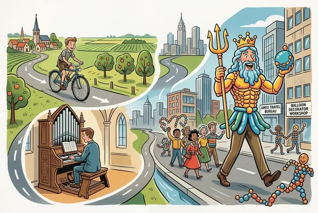
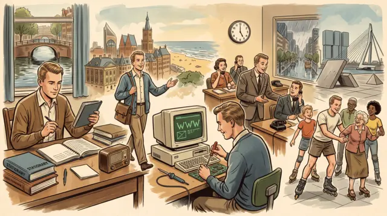
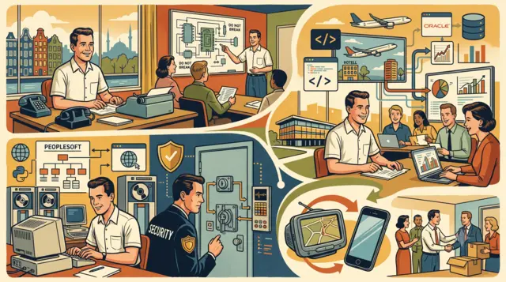
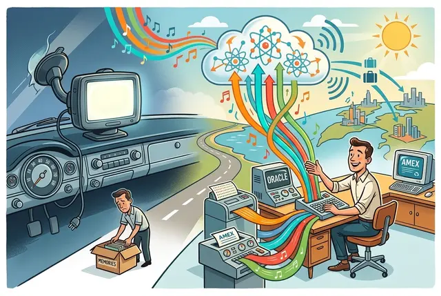

How I Got Here (and Where I Am)
A small warning before we begin: what follows is a surprisingly long account of how one person can move through life, cities, studies, jobs, and the occasional latex‑based parade. Proceed at your own discretion.

A symbolic visual journey from rural Betuwe to Amsterdam, showing cycling to school, early organ playing, travel‑bureau work, and the whimsical balloon‑decorator Neptune parade.I was born and raised in a small village in the Betuwe, where I attended my primary school and later cycled fifteen kilometres each day to my secondary school, the CLV in Veenendaal. It was there that I encountered the first love of my life — a discovery far more memorable than Latin declensions or physics formulae. My “broad curriculum” — a term used with admirable optimism — included Latin, together with the usual assortment of foreign languages, history, maths, chemistry, biology and physics, and of course a bit of Dutch. From the age of ten I earned money as a church organist, playing at more occasions than any child should reasonably be exposed to.
After finishing school, I moved to Amsterdam to study at the University of Amsterdam — mainly because the Betuwe and I did not entirely agree on how life should be lived. Sociology proved a poor fit, but I supported myself working as a caretaker at an Amex travel bureau and, more unexpectedly, as a decorator specialising in very small balloons. This improbable craft took me to Houston, New Orleans, Bordeaux, Toulouse, Belgium and Germany. In New Orleans I even led a parade down Canal Street dressed as a gigantic latex Neptune — a career highlight that defies further explanation.

A blend of musicology, early internet tinkering, classical MIDI culture, and mentoring at Dell, highlighting the shift from analogue study to digital exploration.Eventually I returned to studying, this time Musicology, which suited me far better — sufficiently, in fact, to complete three of the four years, though not, alas, to cross the official finish line. By then I had moved from Amsterdam to The Hague, a city I enjoyed immensely, mostly because it had a beach.
The 1990s also brought the early internet, and I began building early web pages filled mostly with classical MIDI files and tinkered AWE soundbanks, all happily deposited there. When PHP arrived, a whole new world opened up, and I wandered in without hesitation.
As the decade edged toward the new millennium, I left The Hague and returned to Amsterdam and entered the workforce properly. A brief stint at Sterling Commerce and a short-lived job in banking led me to Dell’s support department, where I worked as a mentor — discovering that the quality of a conversation is far more valuable (and ultimately cheaper) than the quantity.

A depiction of work at ROC Zadkine, roller‑skating lessons, TomTom navigation and training, and the later move into travel‑tech development at NextPax.In the early 2000s, housing shortages pushed me to Rotterdam, where I joined ROC Zadkine, first managing the administration database and later heading the student affairs department. During my time in Rotterdam I also taught inline roller skating, to a demographic spanning teenagers to the more adventurous elderly — and not a single participant ended up in hospital.
Love then pulled me back to Amsterdam once more, leading to a new chapter at TomTom. I started in customer service, including a period living and working in Istanbul, then became a company trainer, teaching new hires how not to break things. Later I joined the content team, and eventually moved into hand-coding the support websites and coaxing custom reports out of the PeopleSoft system. I also served as security officer — responsible for the safety of systems, not people, which was probably for the best.
The rise of smartphones made standalone navigation devices less popular — as new inventions tend to do — and after nearly ten years my time at TomTom ended during a reorganisation, leaving me with good memories and friends I still consider close.
In 2017, NextPax in Almere crossed my path: a sophisticated channel manager in the travel industry. It brought together many earlier threads — Amex travel tech, PHP, Oracle (this time Opera rather than PeopleSoft), data analysis (music is just data with better PR), and a genuinely enjoyable group of colleagues. I’m still there, happily.

A calm scene of trains, forests, heathlands, Naarden’s star‑shaped fort, and friendly village life, reflecting the move from Amsterdam to Bussum and Naarden.After certain events unfolded — as they invariably do — and with Amsterdam’s housing market becoming increasingly surreal, I looked for somewhere affordable with a train station connecting both Amsterdam and Almere. Chance (and the absence of a driving licence) led me to Bussum, in ’t Gooi — a region I had never visited and had quietly assumed was only for Dutch celebrities. Instead I found forests, heathlands, sand drifts and the last natural lake in the country, all within walking distance — unexpectedly, I might add.
I’ve since moved a heroic hundred metres and now live in Naarden, on the town border with Bussum — not within the old fortifications, alas. But the calm, almost unhurried atmosphere of these towns and villages, the friendliness of the people, and the shopkeeper conversations that occasionally feel like exchanges between old friends, make it a quietly pleasant place to live — and I see no reason to leave.
If you’ve made it this far, I sincerely hope I haven’t bored you too much. Life rarely unfolds in straight lines, and this particular account certainly didn’t — but I trust it has at least been entertaining to read.